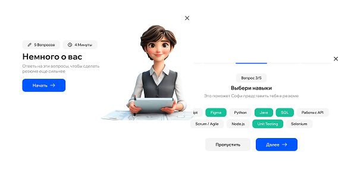
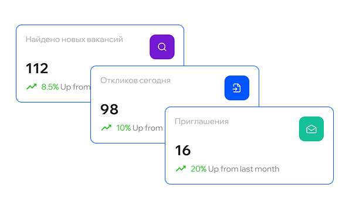
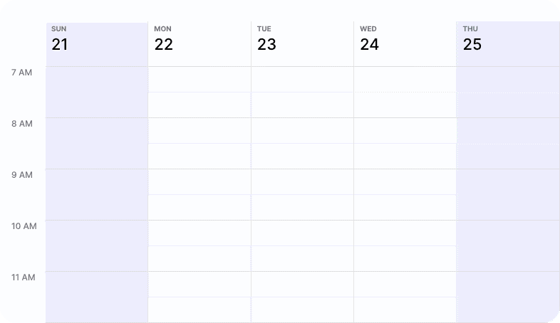

Войдите в HH — HHLab подтянет резюме и спросит приоритеты по вакансиям, доходу и локации. Это займёт ~2 минуты

Шаг 2
Улучшение резюме под требования
HHLab проанализирует ваш профиль, предложит готовые правки и переформулирует ключевые блоки — чтобы вас замечали чаще
Шаг 3
Подбор вакансий и персональные отклики
Ежедневно — релевантные вакансии и до 20 точных откликов в день. Каждое сопроводительное — индивидуально под компанию


Шаг 4
Приглашения, переписка и подготовка к интервью
HHLab возьмет на себя переписку, согласует время интервью и поставит встречу в календарь. Вы получаете чек‑лист: компания, вопросы, материалы для подготовки
Распространяется ли подписка на разные аккаунты hh.ru?
Нет, данная подписка распространяется только на 1 аккаунт
Какое резюме мне составит HHLab?
Пример резюме можно посмотреть выше в блоке "как это работает".
Не будет ли HHLab откликаться на все подряд?
Нет, сейчас мы доработали HHLab так, что она сначала узнает твои предпочтения по вакансиями, затем составляет портрет целевой вакансии, и потом делает отклики максимально похожие на целевой портрет вакансий. И сама отправка откликов делается "умным" способом, распределяя отклики по тем вакансиям и компаниям, которые сейчас активнее всего зовут на интервью.
Видят ли работодатели, что отклики отправлены не мной, а HHLab?
Нет, работодатель не будет знать кто делает отклики, а также не будет знать, что с ним переписывается HHLab
Не заблокируют ли мой аккаунт на hh.ru?
Нет, HHLab работает через официальный API hh.ru, как верифицированный разработчик. Поэтому все отклики делаются с согласия hh.ru.
Сколько длится пробный тариф и есть ли в нем ограничения?
Пробный тариф длится всего 3 дня, в рамках 3 дней ты сможешь посмотреть как работает HHLab.
Какие фильтры можно задать при создании поиска?
Почти любые: по опыту, грейду, типам компаний, зарплате и многим другим фильтрам.
Как быстро отправляются отклики и есть ли ограничения на их отправку?
HHLab может отправлять до 20 откликов в день. Но отправка откликов делается "умным" способом, распределяя отклики по тем вакансиям и компаниям, которые сейчас активнее всего зовут на интервью.